The flowerglyph geom is used to plot multivariate data as flower glyphs
(Van Onzenoodt et al. 2023)
in a scatterplot. Each
variable specified in cols is depicted as a "petal" radiating from the
data point, with the petal length (or area) scaled according to the
corresponding value.
Usage
geom_flowerglyph(
mapping = NULL,
data = NULL,
stat = "identity",
position = "identity",
...,
cols = character(0L),
edges = 30,
petal.width = 0.1,
petal.base.shape = 2,
petal.tip.shape = 1,
petal.tip.notch = 0,
petal.tip.notch.width = 0.15,
petal.base.notch = 0,
petal.base.notch.width = 0.15,
petal.waist = 0,
petal.waist.position = 0.5,
petal.waist.width = 0.15,
petal.curvature = 0,
petal.curvature.position = 0.7,
petal.curvature.width = 0.2,
scale.length = TRUE,
scale.area = FALSE,
fill.petal = NULL,
fill.gradient = NULL,
colour.petal = NULL,
colour.grid = NULL,
linewidth = 1,
linewidth.grid = linewidth,
linejoin = c("mitre", "round", "bevel"),
centre = TRUE,
centre.size = 0.5,
colour.centre = NULL,
fill.centre = NULL,
angle.start = 0,
angle.stop = 2 * base::pi,
draw.grid = FALSE,
legend.glyph.dims = setNames(rep(0.5, length(cols)), cols),
show.legend = NA,
repel = FALSE,
repel.control = ggmultiglyph.repel.control(),
inherit.aes = TRUE
)Arguments
- mapping
Set of aesthetic mappings created by
aes(). If specified andinherit.aes = TRUE(the default), it is combined with the default mapping at the top level of the plot. You must supplymappingif there is no plot mapping.- data
The data to be displayed in this layer. There are three options:
If
NULL, the default, the data is inherited from the plot data as specified in the call toggplot().A
data.frame, or other object, will override the plot data. All objects will be fortified to produce a data frame. Seefortify()for which variables will be created.A
functionwill be called with a single argument, the plot data. The return value must be adata.frame, and will be used as the layer data. Afunctioncan be created from aformula(e.g.~ head(.x, 10)).- stat
The statistical transformation to use on the data for this layer. When using a
geom_*()function to construct a layer, thestatargument can be used to override the default coupling between geoms and stats. Thestatargument accepts the following:A
Statggproto subclass, for exampleStatCount.A string naming the stat. To give the stat as a string, strip the function name of the
stat_prefix. For example, to usestat_count(), give the stat as"count".For more information and other ways to specify the stat, see the layer stat documentation.
- position
A position adjustment to use on the data for this layer. This can be used in various ways, including to prevent overplotting and improving the display. The
positionargument accepts the following:The result of calling a position function, such as
position_jitter(). This method allows for passing extra arguments to the position.A string naming the position adjustment. To give the position as a string, strip the function name of the
position_prefix. For example, to useposition_jitter(), give the position as"jitter".For more information and other ways to specify the position, see the layer position documentation.
- ...
Other arguments passed on to
layer(). These are often aesthetics, used to set an aesthetic to a fixed value, likecolour = "green"orsize = 3. They may also be parameters to the paired geom/stat.- cols
A character vector containing the names of at least two columns specifying the variables to be plotted in the glyphs. The selected columns must be either numeric or factor variables.
- edges
The number of points used to approximate the taper profile of one side of a petal. Higher values give smoother petal outlines.
- petal.width
The width of a petal (as a proportion of
size|) at its widest point.- petal.base.shape
A positive numeric value controlling how rapidly the petal widens from its base. Smaller values produce a broader attachment to the centre of the glyph, whereas larger values delay the expansion of the petal, producing a narrower, more clawed base.
- petal.tip.shape
A positive numeric value controlling how rapidly the petal tapers towards its tip. Smaller values produce broader, more rounded tips, whereas larger values concentrate the petal width closer to its middle, producing progressively narrower, more pointed or lanceolate tips.
- petal.tip.notch
A numeric value controlling deformation of the petal tip. A value of
0produces a smooth, unmodified tip. Positive values (typically \(> 0\)) create an increasingly deep inward cleft with smooth shoulders, producing retuse, emarginate, obcordate, or bifid petal tips. Negative values extend the tip beyond its nominal length, producing progressively more acuminate, cuspidate, or aristate tips.- petal.tip.notch.width
A positive numeric value controlling the breadth of the tip notch. Smaller values produce a narrow, sharply incised cleft, or point, whereas larger values produce a broader, more rounded indentation or extension.
- petal.base.notch
A numeric value controlling deformation of the petal base. A value of
0produces a smooth, unmodified base. Positive values shift the basal shoulders backward relative to the central notch vertex (which remains anchored at the origin), producing cordate, sagittate, reniform, hastate, or auriculate petal shapes. Negative values extend the base into a basal protrusion or claw.- petal.base.notch.width
A positive numeric value controlling the breadth of the basal notch or protrusion. Smaller values produce a narrow, sharply defined sinus or point, whereas larger values produce a broader, more rounded basal indentation or extension.
- petal.waist
A numeric value controlling the depth of a constriction along the petal. A value of
0produces a uniformly tapered petal, whereas larger values produce an increasingly pronounced narrowing, resulting in pandurate, fiddle-shaped, or otherwise constricted petals.- petal.waist.position
A numeric value between
0and1controlling the position of the waist along the petal axis, where0corresponds to the base and1to the tip.- petal.waist.width
A positive numeric value controlling the breadth of the waist. Smaller values produce a sharp, localized constriction, whereas larger values produce a broader, more gradual narrowing.
- petal.curvature
A numeric value or vector controlling the curvature of the petal centreline. A value of
0produces a straight petal, whereas single positive or negative values produce simple arcuate or falcate (C-shaped) curvature in opposite directions. Passing a vector specifies multiple curvature bends along the petal axis; for example, a vector of length 2 with opposing signs (e.g.,c(3.0, -3.0)) produces a sigmoid (S-shaped) petal.- petal.curvature.position
A numeric value or vector between
0and1controlling the position of maximum curvature along the petal axis, where0corresponds to the base and1to the tip. Whenpetal.curvatureis a vector specifying multiple bends (e.g., for sigmoid shapes), this parameter specifies the location along the axis for each corresponding bend.- petal.curvature.width
A positive numeric value controlling the breadth of the region over which the petal bends. Smaller values concentrate the curvature into a localized bend, whereas larger values distribute the curvature more evenly along the petal, producing a broader, more gradual arc.
- scale.length
logical. If
TRUE, the petal lengths are scaled according to value ofz.- scale.area
logical. If
TRUE, the area of the petals are scaled according to value ofz.- fill.petal
The fill colour of the petals.
- fill.gradient
The palette for gradient fill of the segments. See Details section of
col_numeric()function in thescalespackage for available options.- colour.petal
The outline colour of the petals.
- colour.grid
The colour of the grid lines.
- linewidth
The petal outline line width.
- linewidth.grid
The line width for the grid lines.
- linejoin
The line join style for the petal outlines. Either
"mitre","round"or"bevel".- centre
logical. If
TRUE, a central point is drawn at the glyph origin. Default isTRUE.- centre.size
The size (radius, in mm) of the central point.
- colour.centre
The line colour of the central point.
- fill.centre
The fill colour of the central point.
- angle.start
The start angle for the petals in radians. Default is zero.
- angle.stop
The stop angle for the petals in radians. Default is \(2\pi\).
- draw.grid
logical. If
TRUE, grid levels are plotted along the central axis of each petal if all the variables specified incolsare an ordered factor. Default isFALSE.- legend.glyph.dims
The dimensions of the legend glyph plot. Can be a numeric vector of unit length (where all the dimensions will have same value) or a numeric vector of same length as "cols" with the "cols" as names.
- show.legend
logical. Should this layer be included in the legends?
NA, the default, includes if any aesthetics are mapped.FALSEnever includes, andTRUEalways includes. It can also be a named logical vector to finely select the aesthetics to display. To include legend keys for all levels, even when no data exists, useTRUE. IfNA, all levels are shown in legend, but unobserved levels are omitted.- repel
logical. If
TRUE, the glyphs are repel away from each other to avoid overlaps. Default isFALSE.- repel.control
A list of control settings for the repel algorithm. Ignored if
repel = FALSE. Seeggmultiglyph.repel.controlfor details on the various control parameters.- inherit.aes
If
FALSE, overrides the default aesthetics, rather than combining with them. This is most useful for helper functions that define both data and aesthetics and shouldn't inherit behaviour from the default plot specification, e.g.annotation_borders().
Aesthetics
geom_flowerglyph() understands the following
aesthetics (required aesthetics are in bold):
x
y
alpha
colour
fill
group
size
centre.size
See vignette("ggplot2-specs", package = "ggplot2") for further
details on setting these aesthetics.
The following additional aesthetics are considered if repel = TRUE:
point.size
segment.linetype
segment.colour
segment.size
segment.alpha
segment.curvature
segment.angle
segment.ncp
segment.shape
segment.square
segment.squareShape
segment.inflect
segment.debug
See ggrepel
examples page
for further details on setting these aesthetics.
References
Van Onzenoodt C, Vazquez P, Ropinski T (2023). “Out of the plane: Flower versus star glyphs to support high-dimensional exploration in two-dimensional embeddings.” IEEE Transactions on Visualization and Computer Graphics, 29(12), 5468–5482.
Examples
library(ggplot2)
#~~~~~~~~~~~~~~~~~~~~~~~~~~~~~~~~~~~~~~~~~~~~~~~~~~~~~~~~~~~~~~~~~~~~~~~~~~~~
# Prepare the data ----
#~~~~~~~~~~~~~~~~~~~~~~~~~~~~~~~~~~~~~~~~~~~~~~~~~~~~~~~~~~~~~~~~~~~~~~~~~~~~
# Variables to map to glyphs
zs <- c("hp", "drat", "wt", "qsec", "vs", "am", "gear", "carb")
# Keep a copy of the original data
mtcars_fct <- mtcars
# Scaled numeric data
mtcars[zs] <- lapply(mtcars[zs], scales::rescale)
mtcars$cyl <- factor(mtcars$cyl)
mtcars$lab <- row.names(mtcars)
# Ordered factor data
mtcars_fct[zs[1:3]] <-
lapply(mtcars_fct[zs[1:3]], function(x)
ordered(cut(x, breaks = 3,
labels = c("low", "medium", "high"))))
mtcars_fct[zs[4:8]] <-
lapply(mtcars_fct[zs[4:8]], function(x)
ordered(cut(x, breaks = 4,
labels = c("tiny", "small", "medium", "large"))))
mtcars_fct$cyl <- factor(mtcars_fct$cyl)
mtcars_fct$lab <- row.names(mtcars_fct)
#~~~~~~~~~~~~~~~~~~~~~~~~~~~~~~~~~~~~~~~~~~~~~~~~~~~~~~~~~~~~~~~~~~~~~~~~~~~~
# Mapped fill + scaled length ----
#~~~~~~~~~~~~~~~~~~~~~~~~~~~~~~~~~~~~~~~~~~~~~~~~~~~~~~~~~~~~~~~~~~~~~~~~~~~~
ggplot(data = mtcars) +
geom_flowerglyph(aes(x = mpg, y = disp, fill = cyl),
cols = zs, size = 10,
petal.base.shape = 3, petal.width = 0.25,
alpha = 0.8) +
ylim(c(-0, 550))
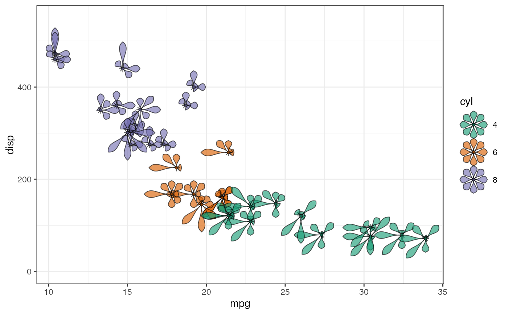
# \donttest{
#~~~~~~~~~~~~~~~~~~~~~~~~~~~~~~~~~~~~~~~~~~~~~~~~~~~~~~~~~~~~~~~~~~~~~~~~~~~~
# Mapped fill + scaled area ----
#~~~~~~~~~~~~~~~~~~~~~~~~~~~~~~~~~~~~~~~~~~~~~~~~~~~~~~~~~~~~~~~~~~~~~~~~~~~~
ggplot(data = mtcars) +
geom_flowerglyph(aes(x = mpg, y = disp, fill = cyl),
cols = zs, size = 10,
petal.base.shape = 3, petal.width = 0.25,
scale.length = FALSE, scale.area = TRUE,
alpha = 0.8) +
ylim(c(-0, 550))
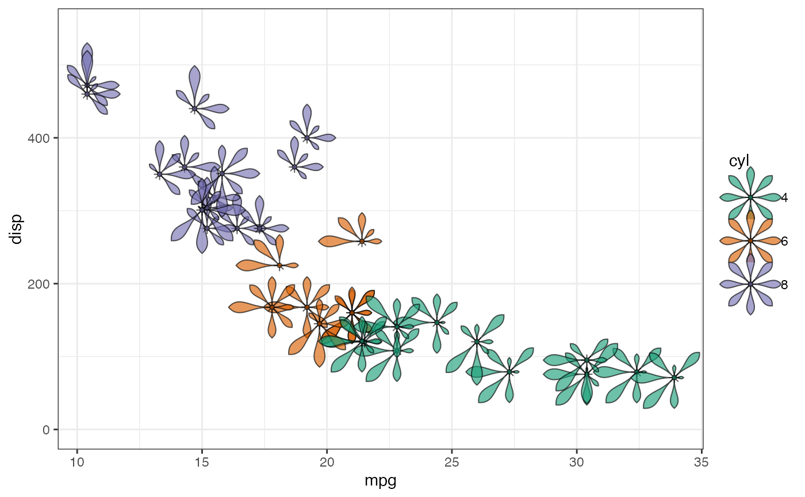
#~~~~~~~~~~~~~~~~~~~~~~~~~~~~~~~~~~~~~~~~~~~~~~~~~~~~~~~~~~~~~~~~~~~~~~~~~~~~
# Mapped colour + scaled length ----
#~~~~~~~~~~~~~~~~~~~~~~~~~~~~~~~~~~~~~~~~~~~~~~~~~~~~~~~~~~~~~~~~~~~~~~~~~~~~
ggplot(data = mtcars) +
geom_flowerglyph(aes(x = mpg, y = disp, colour = cyl),
cols = zs, size = 10,
petal.base.shape = 3, petal.width = 0.25,
alpha = 0.8) +
ylim(c(-0, 550))
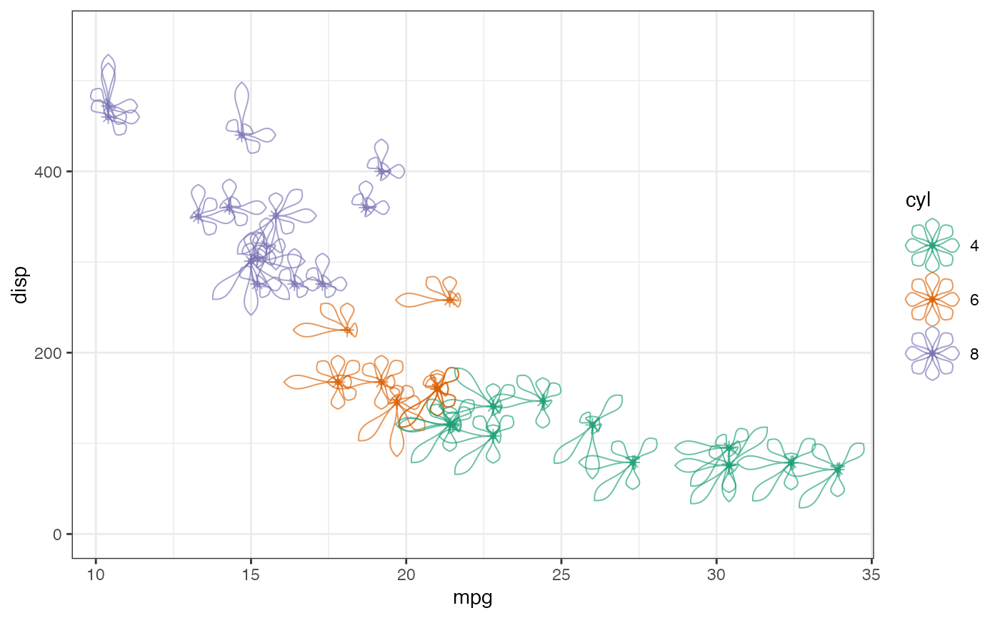
#~~~~~~~~~~~~~~~~~~~~~~~~~~~~~~~~~~~~~~~~~~~~~~~~~~~~~~~~~~~~~~~~~~~~~~~~~~~~
# Mapped colour + scaled area ----
#~~~~~~~~~~~~~~~~~~~~~~~~~~~~~~~~~~~~~~~~~~~~~~~~~~~~~~~~~~~~~~~~~~~~~~~~~~~~
ggplot(data = mtcars) +
geom_flowerglyph(aes(x = mpg, y = disp, colour = cyl),
cols = zs, size = 10,
petal.base.shape = 3, petal.width = 0.25,
scale.length = FALSE, scale.area = TRUE,
alpha = 0.8) +
ylim(c(-0, 550))
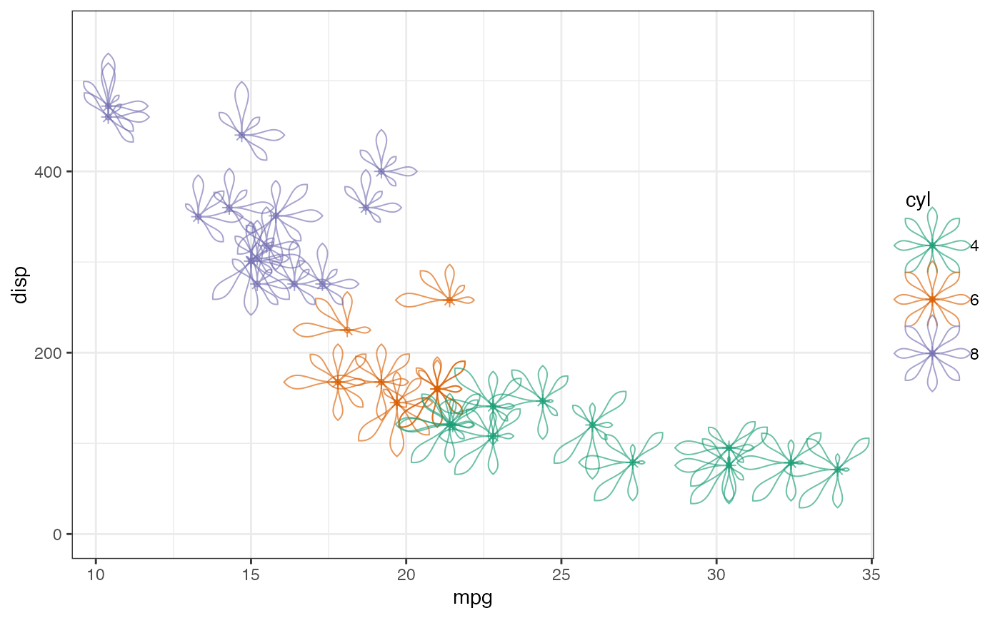
#~~~~~~~~~~~~~~~~~~~~~~~~~~~~~~~~~~~~~~~~~~~~~~~~~~~~~~~~~~~~~~~~~~~~~~~~~~~~
# Petal shape variations ----
#~~~~~~~~~~~~~~~~~~~~~~~~~~~~~~~~~~~~~~~~~~~~~~~~~~~~~~~~~~~~~~~~~~~~~~~~~~~~
ggplot(data = mtcars) +
geom_flowerglyph(aes(x = mpg, y = disp, fill = cyl),
cols = zs, size = 10,
petal.base.shape = 5, petal.width = 0.25,
alpha = 0.8) +
ylim(c(-0, 550))
ggplot(data = mtcars) +
geom_flowerglyph(aes(x = mpg, y = disp, fill = cyl),
cols = zs, size = 10,
petal.base.shape = 3, petal.width = 0.25,
petal.tip.notch = 0.3,
alpha = 0.8) +
ylim(c(-0, 550))
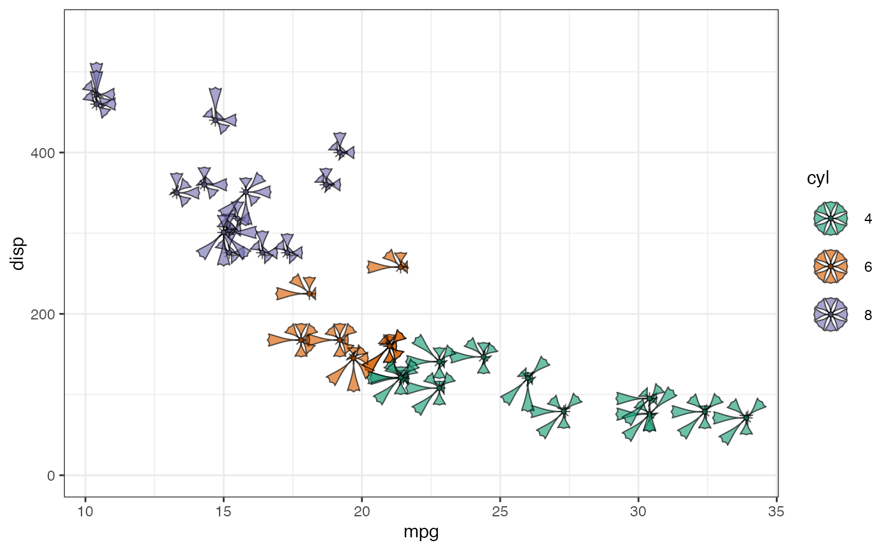
#~~~~~~~~~~~~~~~~~~~~~~~~~~~~~~~~~~~~~~~~~~~~~~~~~~~~~~~~~~~~~~~~~~~~~~~~~~~~
# Petals with multivariate colours ----
#~~~~~~~~~~~~~~~~~~~~~~~~~~~~~~~~~~~~~~~~~~~~~~~~~~~~~~~~~~~~~~~~~~~~~~~~~~~~
ggplot(data = mtcars) +
geom_flowerglyph(aes(x = mpg, y = disp),
cols = zs, size = 10,
petal.base.shape = 3, petal.width = 0.25,
fill.petal = RColorBrewer::brewer.pal(8, "Dark2"),
alpha = 0.8) +
ylim(c(-0, 550))
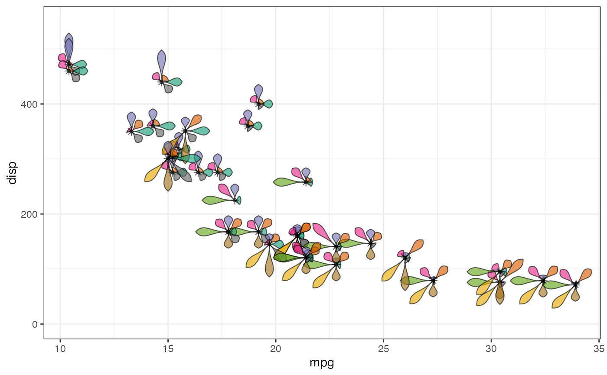
#~~~~~~~~~~~~~~~~~~~~~~~~~~~~~~~~~~~~~~~~~~~~~~~~~~~~~~~~~~~~~~~~~~~~~~~~~~~~
# Gradient fill ----
#~~~~~~~~~~~~~~~~~~~~~~~~~~~~~~~~~~~~~~~~~~~~~~~~~~~~~~~~~~~~~~~~~~~~~~~~~~~~
ggplot(data = mtcars) +
geom_flowerglyph(aes(x = mpg, y = disp),
cols = zs, size = 10,
petal.base.shape = 3, petal.width = 0.25,
fill.gradient = "Greens",
alpha = 0.8) +
ylim(c(-0, 550))
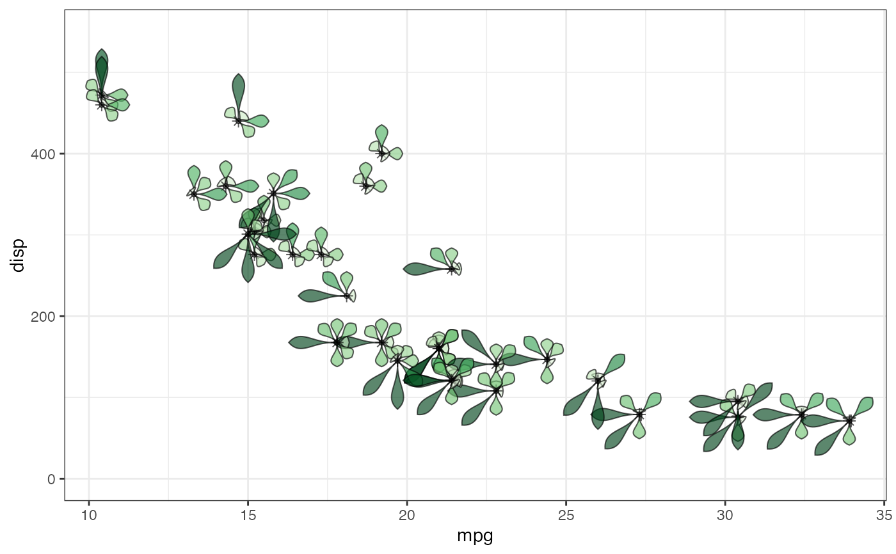
ggplot(data = mtcars) +
geom_flowerglyph(aes(x = mpg, y = disp),
cols = zs, size = 10,
petal.base.shape = 3, petal.width = 0.25,
fill.gradient = "RdYlBu",
alpha = 0.8) +
ylim(c(-0, 550))
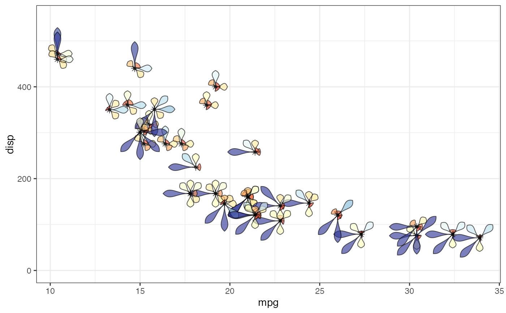
#~~~~~~~~~~~~~~~~~~~~~~~~~~~~~~~~~~~~~~~~~~~~~~~~~~~~~~~~~~~~~~~~~~~~~~~~~~~~
# Faceted ----
#~~~~~~~~~~~~~~~~~~~~~~~~~~~~~~~~~~~~~~~~~~~~~~~~~~~~~~~~~~~~~~~~~~~~~~~~~~~~
ggplot(data = mtcars) +
geom_flowerglyph(aes(x = mpg, y = disp, fill = cyl),
cols = zs, size = 10,
petal.base.shape = 3, petal.width = 0.25,
alpha = 0.8) +
ylim(c(-0, 550)) +
facet_grid(. ~ cyl)
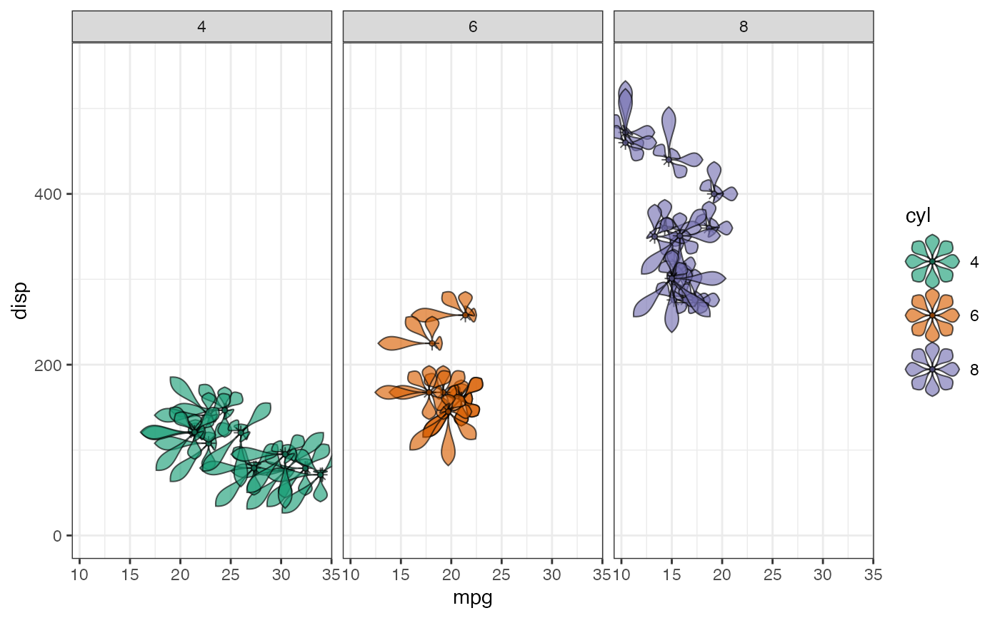
ggplot(data = mtcars) +
geom_flowerglyph(aes(x = mpg, y = disp, colour = cyl),
cols = zs, size = 10,
petal.base.shape = 3, petal.width = 0.25,
alpha = 0.8) +
ylim(c(-0, 550)) +
facet_grid(. ~ cyl)
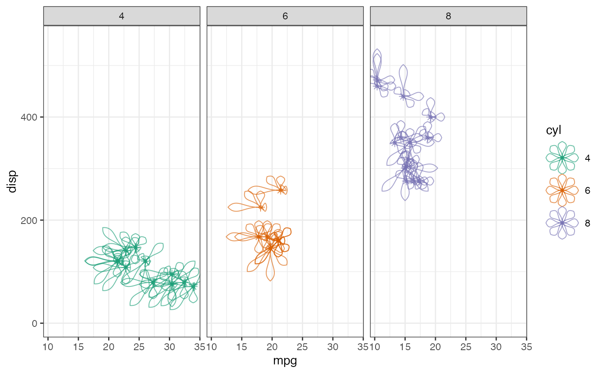
ggplot(data = mtcars) +
geom_flowerglyph(aes(x = mpg, y = disp),
cols = zs, size = 10,
petal.base.shape = 3, petal.width = 0.25,
fill.petal = RColorBrewer::brewer.pal(8, "Dark2"),
alpha = 0.8) +
ylim(c(-0, 550)) +
facet_grid(. ~ cyl)
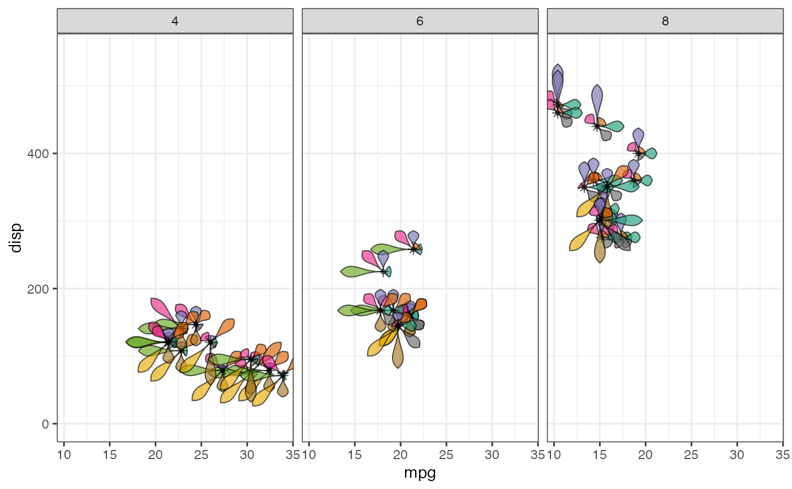
#~~~~~~~~~~~~~~~~~~~~~~~~~~~~~~~~~~~~~~~~~~~~~~~~~~~~~~~~~~~~~~~~~~~~~~~~~~~~
# Repel glyphs ----
#~~~~~~~~~~~~~~~~~~~~~~~~~~~~~~~~~~~~~~~~~~~~~~~~~~~~~~~~~~~~~~~~~~~~~~~~~~~~
ggplot(data = mtcars) +
geom_point(aes(x = mpg, y = disp, colour = cyl)) +
geom_flowerglyph(aes(x = mpg, y = disp, fill = cyl),
cols = zs, size = 10,
petal.base.shape = 3, petal.width = 0.25,
alpha = 1, repel = TRUE) +
ylim(c(-0, 550))
#> Warning: 3 glyphs have too many overlaps.
#> Consider increasing "max.overlaps"
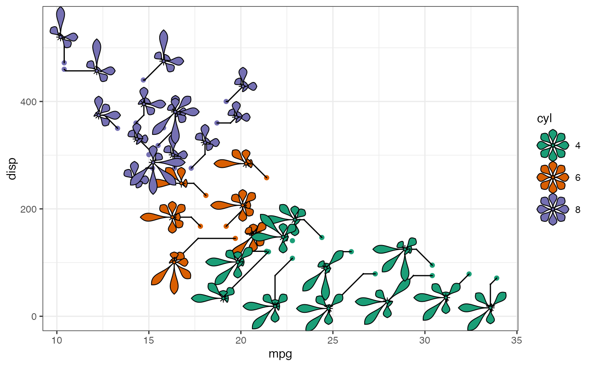
ggplot(data = mtcars) +
geom_point(aes(x = mpg, y = disp, colour = cyl)) +
geom_flowerglyph(aes(x = mpg, y = disp, colour = cyl),
cols = zs, size = 10,
petal.base.shape = 3, petal.width = 0.25,
alpha = 1, repel = TRUE) +
ylim(c(-0, 550))
#> Warning: 3 glyphs have too many overlaps.
#> Consider increasing "max.overlaps"
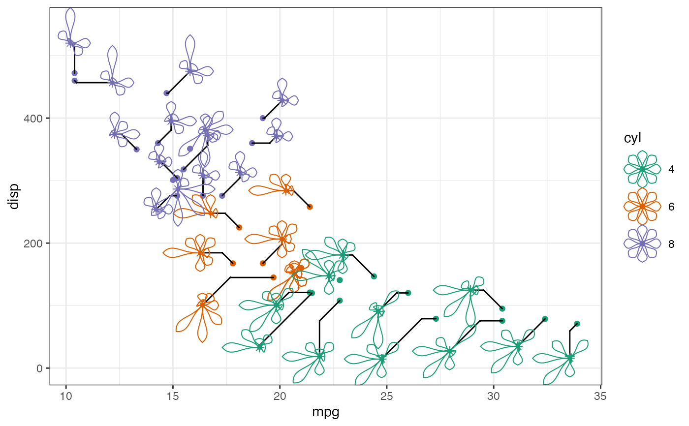
#~~~~~~~~~~~~~~~~~~~~~~~~~~~~~~~~~~~~~~~~~~~~~~~~~~~~~~~~~~~~~~~~~~~~~~~~~~~~
# Grid as nested petals ----
#~~~~~~~~~~~~~~~~~~~~~~~~~~~~~~~~~~~~~~~~~~~~~~~~~~~~~~~~~~~~~~~~~~~~~~~~~~~~
ggplot(data = mtcars_fct) +
geom_flowerglyph(aes(x = mpg, y = disp, fill = cyl),
cols = zs, size = 4,
petal.base.shape = 3, petal.width = 0.25,
alpha = 0.8, draw.grid = TRUE) +
ylim(c(-0, 550))
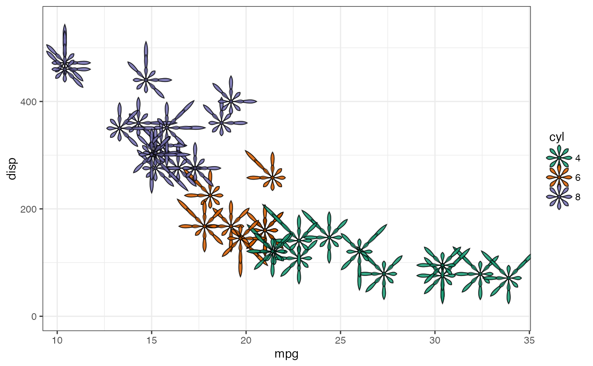
ggplot(data = mtcars_fct) +
geom_flowerglyph(aes(x = mpg, y = disp, fill = cyl),
cols = zs, size = 5,
petal.base.shape = 3, petal.width = 0.25,
scale.length = FALSE, scale.area = TRUE,
alpha = 0.8, draw.grid = TRUE) +
ylim(c(-0, 550))
#~~~~~~~~~~~~~~~~~~~~~~~~~~~~~~~~~~~~~~~~~~~~~~~~~~~~~~~~~~~~~~~~~~~~~~~~~~~~
# Legend options ----
#~~~~~~~~~~~~~~~~~~~~~~~~~~~~~~~~~~~~~~~~~~~~~~~~~~~~~~~~~~~~~~~~~~~~~~~~~~~~
# Theme modifications for legend
legend_theme <-
theme_bw(base_size = 7.5) +
theme(legend.direction = "vertical",
legend.box = "horizontal",
legend.position = "bottom",
legend.text = element_text(margin = margin(l = 7)),
legend.key.height = unit(1.5, 'lines'))
# Glyph variable-wise legends
ggplot(data = mtcars) +
geom_point(aes(x = mpg, y = disp, colour = cyl), show.legend = FALSE) +
geom_flowerglyph(aes(x = mpg, y = disp, fill = cyl),
cols = zs, size = 5,
petal.base.shape = 3, petal.width = 0.25,
alpha = 1, repel = TRUE) +
ylim(c(-0, 550)) +
scale_z_continuous(z = zs) +
guide_z_order(z = zs, default_aes = "fill") +
legend_theme
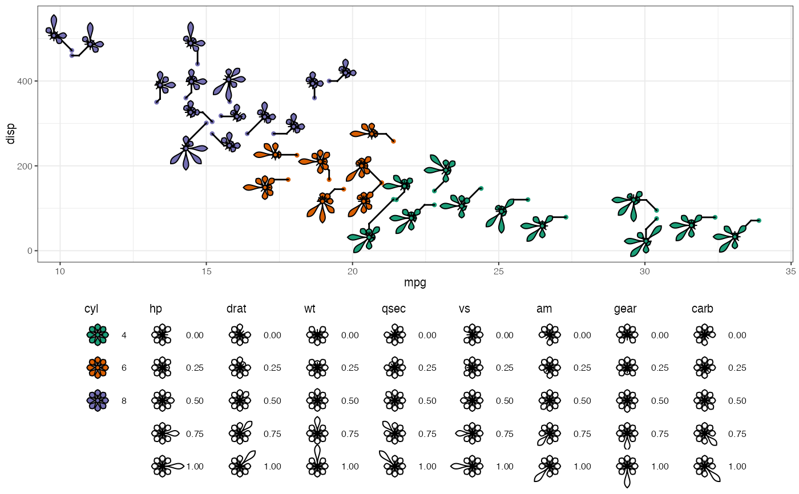
# Using custom guide
# flowerglyphGrob
guide_flowergrob <-
flowerglyphGrob(z = c(0.54, 0.75, 0.8, 1.4, 0.85, 0.53, 0.6, 0.65),
petal.base.shape = 3, petal.width = 0.25,
size = 15)
# guide_flowergrob <-
# addlabel.glyphGrob(grob = guide_flowergrob, label = zs,
# push = 1, segment = FALSE)
ggplot(data = mtcars) +
geom_point(aes(x = mpg, y = disp, colour = cyl), show.legend = FALSE) +
geom_flowerglyph(aes(x = mpg, y = disp, fill = cyl),
cols = zs, size = 5,
petal.base.shape = 3, petal.width = 0.25,
alpha = 1, repel = TRUE) +
ylim(c(-0, 550)) +
guides(fill = guide_legend(order = 1, position = "right"),
custom = guide_custom(guide_flowergrob,
width = unit(0.1, "npc"),
height = unit(0.1, "npc"),
position = "bottom",
theme = theme(legend.margin = margin(t = 40, b = 30))))
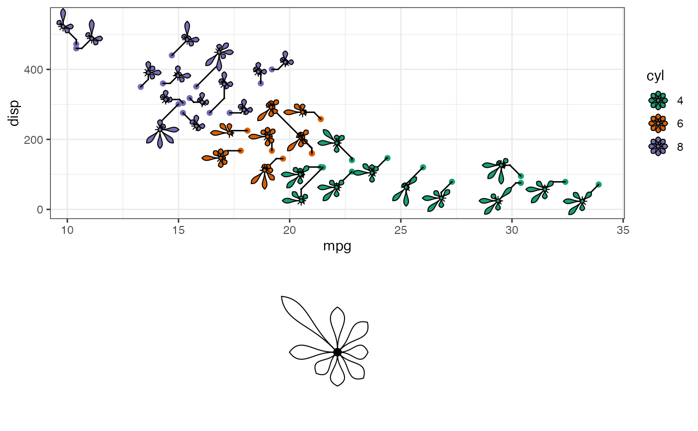
# }